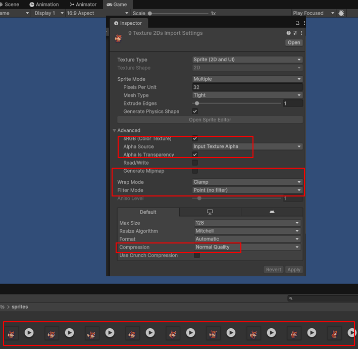
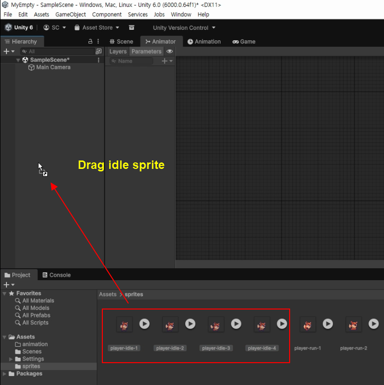
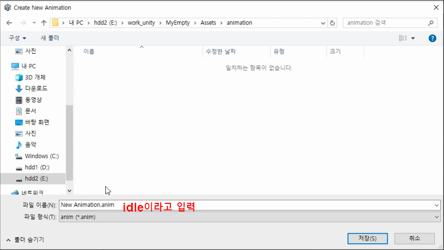
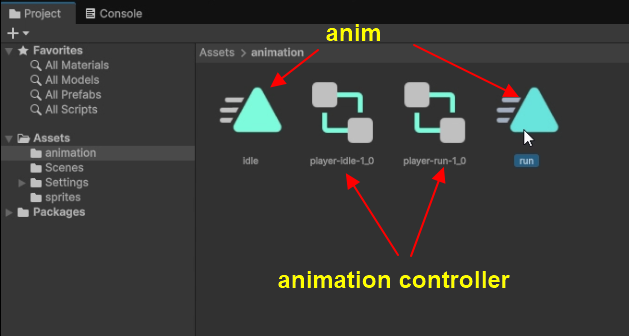
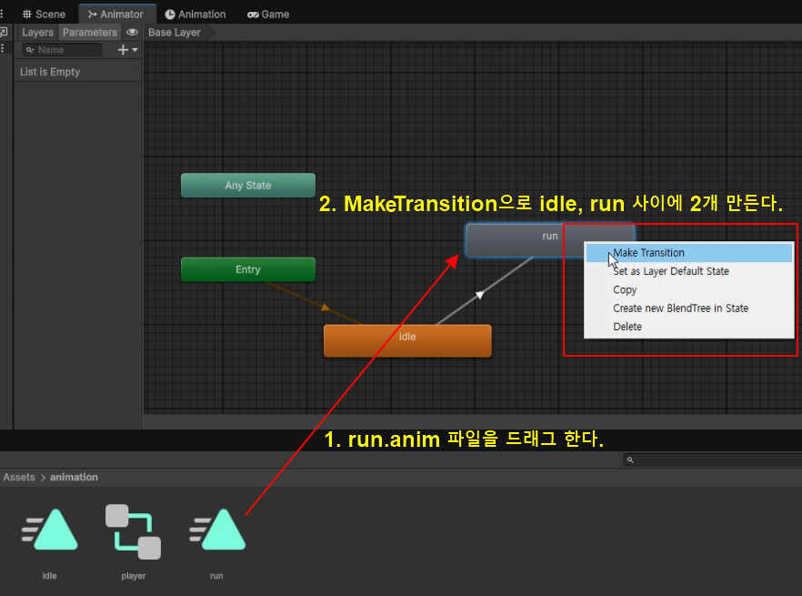
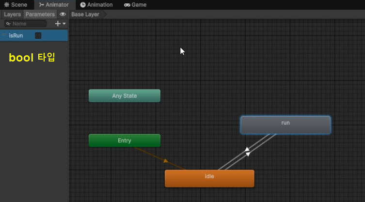
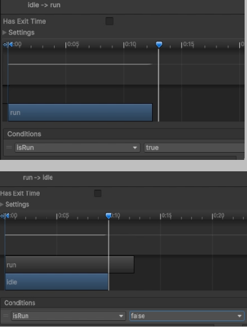
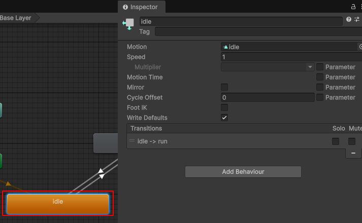
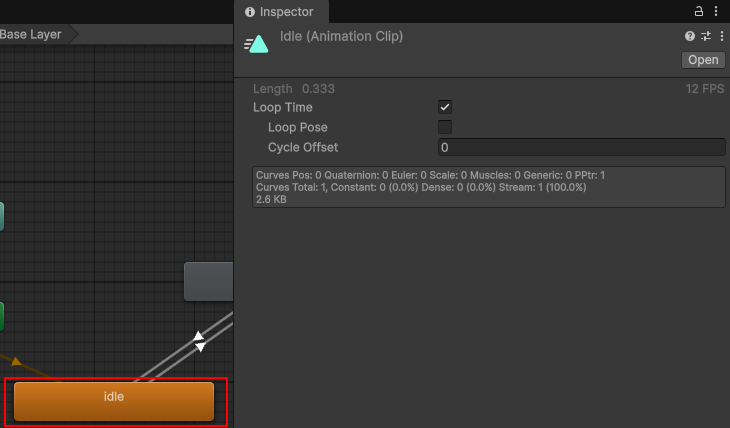
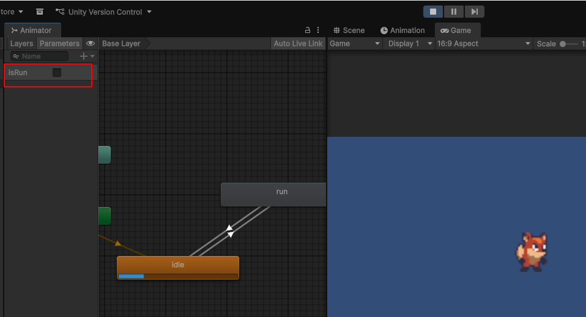

1. 텍스쳐 옵션 설정
애니메이션할 할 모든 파일을 텍스쳐 옵션을 다음과 같이 설정한다.
스프라이트 텍스쳐에서 주로 사용하는 Filter Mode의 특징은 다음과 같다.
Point (no filter)
픽셀 하나하나가 칼같이 떨어지게 표현하는 방식이다.
-
특징: 이미지를 확대했을 때 경계선이 뭉개지지 않고 계단 현상이 그대로 남는다.
-
추천: 픽셀 아트(도트 게임), 레트로 스타일 게임.
-
주의:
Compression설정이 잘못되면 픽셀이 깨져 보일 수 있으므로, 픽셀 아트의 경우 보통Compression을None으로 두거나 고품질로 설정한다.
Bilinear (기본값)
주변 픽셀들을 평균 내어 부드럽게 보정하는 방식이다.
-
특징: 이미지를 확대하거나 회전했을 때 경계면을 부드럽게(안티앨리어싱 효과) 만들어준다.
-
추천: 고해상도 일러스트, 부드러운 벡터 스타일 그래픽, 실사 사진 기반 스프라이트.
-
주의: 아주 작은 크기의 픽셀 아트를 Bilinear로 두면 뿌옇게(Blurry) 보여서 그래픽이 지저분해진다.
2. 스프라이트 파일을 드래그 하여 애니메이션 파일을 생성한다.
idle 관련 스프라이트 파일을 Hierachy로 드래그 하여 애니메이션 파일을 생성한다.
드래그 하고나면 대화상자가 뜬다. idle이라고 입력한다.

run 스프라이트 파일도 드래그 해서. run 애니메이션 파일도 똑같이 만든다.
3. 애니메이션 컨트롤러 파일 이름을 정리한다.
idle 애니메이션 컨트롤러 파일만 남기고, 나머지 애니메이션 컨트롤러 파일은 삭제한다.idle 애니메이션 컨트롤러 파일 이름은 player로 수정한다.

4. anim 파일을 드래그 하여 Transition으로 연결한다.
player 애니메이션 컨트롤러를 오픈한다.run anim 파일을 드래그 후, Make Transition으로 run과 idle 사이를 선 2개로 서로 연결한다.

5. 애니메이션 전이용 파라메터를 추가한다.
bool 타입의 isRun 파라메터를 추가한다.isRun이면 run 애니메이션을 하고, false이면 idle 애니메이션을 한다.

6. 애니메이션 트랜지션을 설정한다.
- (1) "Has Exit Time"을 체크 해제한다.- (2) "Transition Start" 전이 시작 지점으로 왼쪽으로 옮긴다.
- (3) "Transition End" 전이 종료 지점으로 왼쪽으로 옮긴다.
- (4) "Exit Time"과 재생 헤드 (Playhead / Scrub Bar) 두가지 역할로
전이시작점과 점이 종료 지점을 왼쪽으로 옮긴다.
idle -> run으로 전이 할때는 isRun을 true로 지정한다.
run -> idle으로 전이 할때는 isRun을 false로 지정한다.

idle 상태(노드)를 한번만 클릭하면 다음과 같이 표시된다. Speed로 애이메이션 스피드를 지정할수 있다.

idle 상태(노드)를 더블 클릭하면 다음과 같이 표시된다.
Loop Time으로 반복을 지정할수 있다.

7. 애니메이션을 확인 한다.
에디터 플레이 버튼을 누른다.isRun 버튼을 체크하면 run 애니메이션으로 바뀐다.
